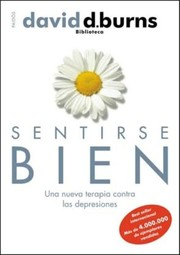

Feeling Good: The New Mood Therapy
Book·David D. Burns, 1980·伯恩斯新情绪疗法

Brings automatic thoughts, cognitive reappraisal and exercises into everyday life.
- Author
- David D. Burns
- Year
- 1980
- Difficulty
- Beginner
- Kind
- Practice
- Schools
- Cognitive Therapies
- Core theories
- Cognitive Model of Depression
Editions
- Chinese edition 《伯恩斯新情绪疗法》 [美]戴维.伯恩斯医学博士 · tr. 李亚萍 · 科学技术文献出版社 · 2014 Douban 9 (461 ratings) Douban page ↗
- English edition Feeling Good: The New Mood Therapy David D. Burns · Avon Books, revised and updated edition · 1999 Open Library ↗